Am început să învăț limba coreeană în 2018, iar de atunci viața mea s-a schimbat total. În continuare voi scrie despre etapele învățării limbii coreene și oportunitățile apărute de atunci.
În vara anului 2018 am fost la o școală de vară unde am început să învăț coreeana. Din septembrie 2018 până în mai 2019 am învățat la cursul de începători.
În vara anului 2019 am fost voluntară alături de persoane venite din Coreea.
2019-2020:Din 2019 am urmat cursul de intermediari, unde am cunoscut o altă profesoară de coreeană cu care încă mai țin legătura. Ea m-a încurajat să particip într-un concurs unde am obținut primul loc.
2020-2022 Tot profesoara mea de coreeană a făcut ca și eu să încep să predau limba coreeană din 2020. În ultimii 2 ani am predat și învățat la nivelul avansat
Am participat la un concurs numit TalkTalkKorea, unde am făcut fotografii în haina tradițională coreeană, numită Hanbok (한복)
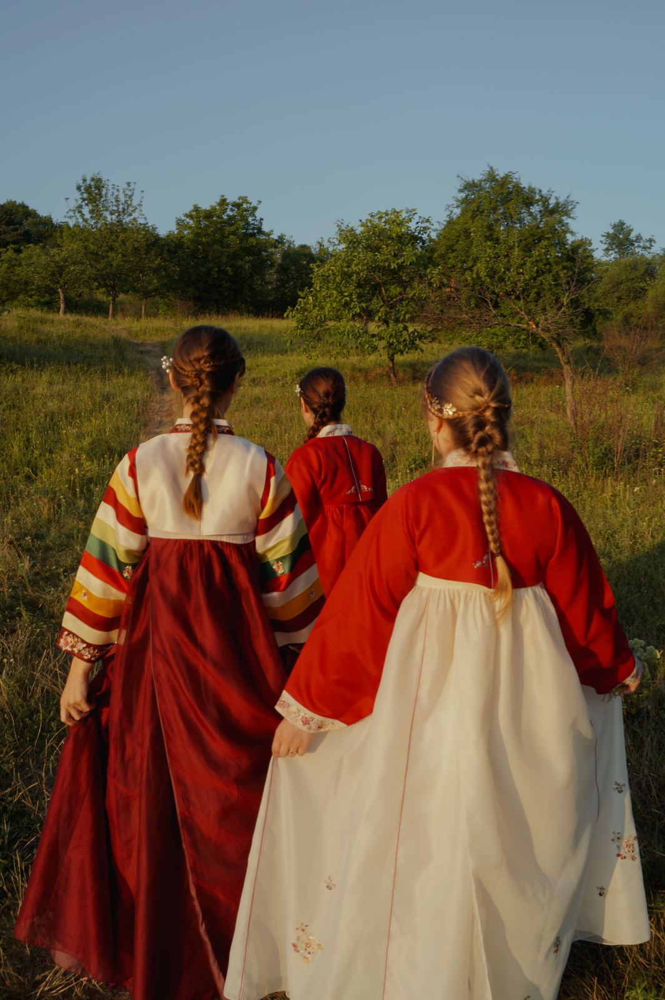
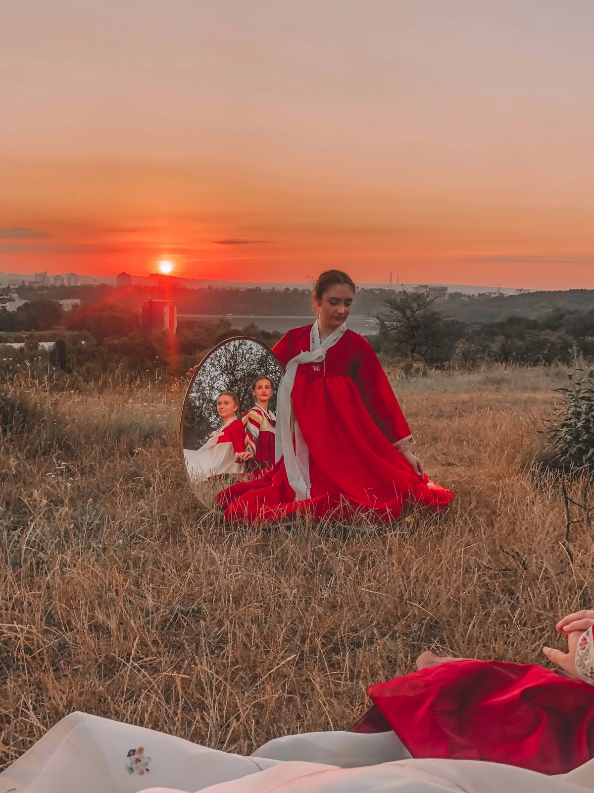
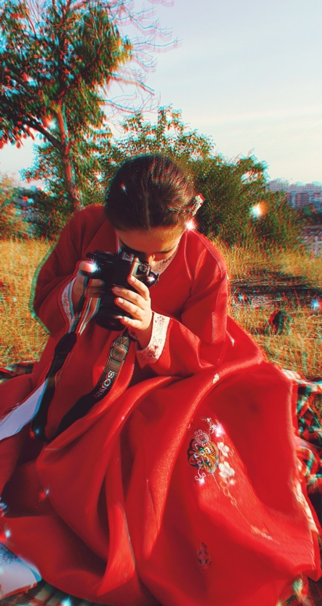
 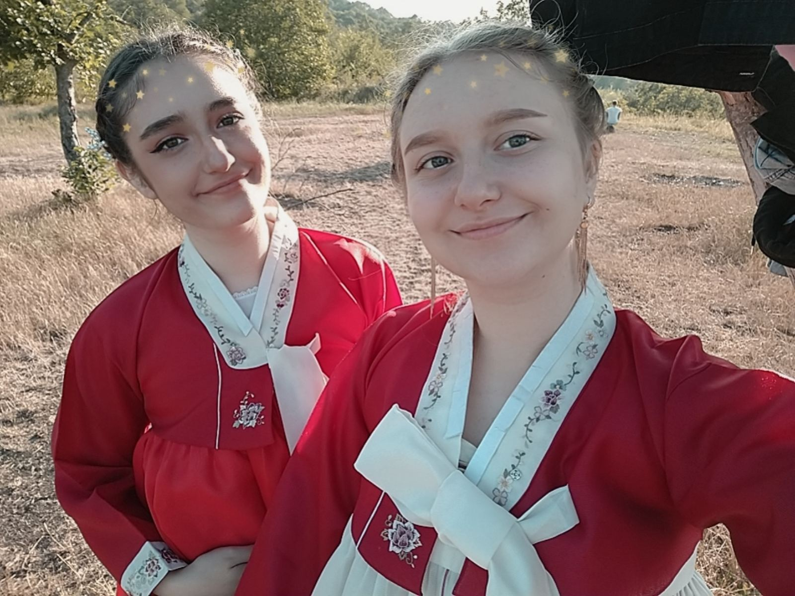
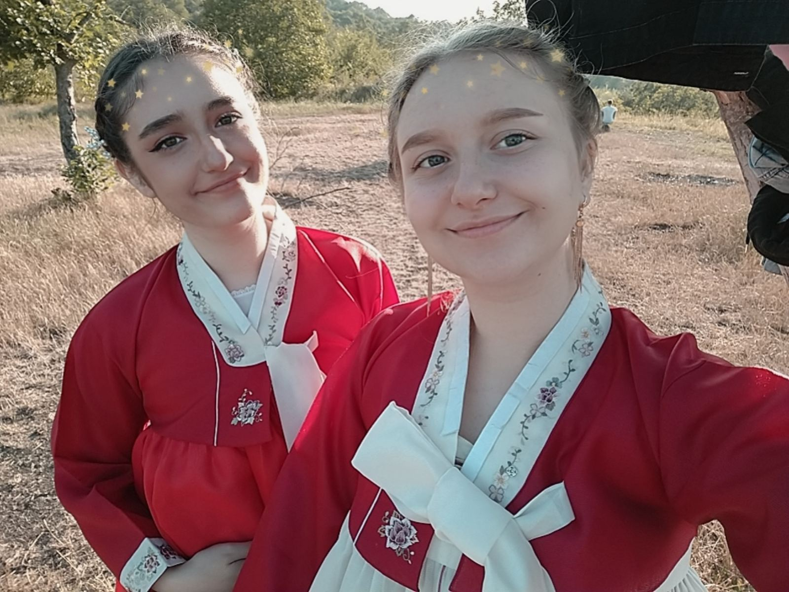
 Activitățile din perioada respectivă:
Activitățile din perioada respectivă:
- 1-a fotografie:: Nunta profesoarei mele în stil coreean
- a 2-a fotografie :Înmânarea diplomei (nivelul intermediar2)
- a 3-a fotografie : Lecție de limbă și cultură coreeană
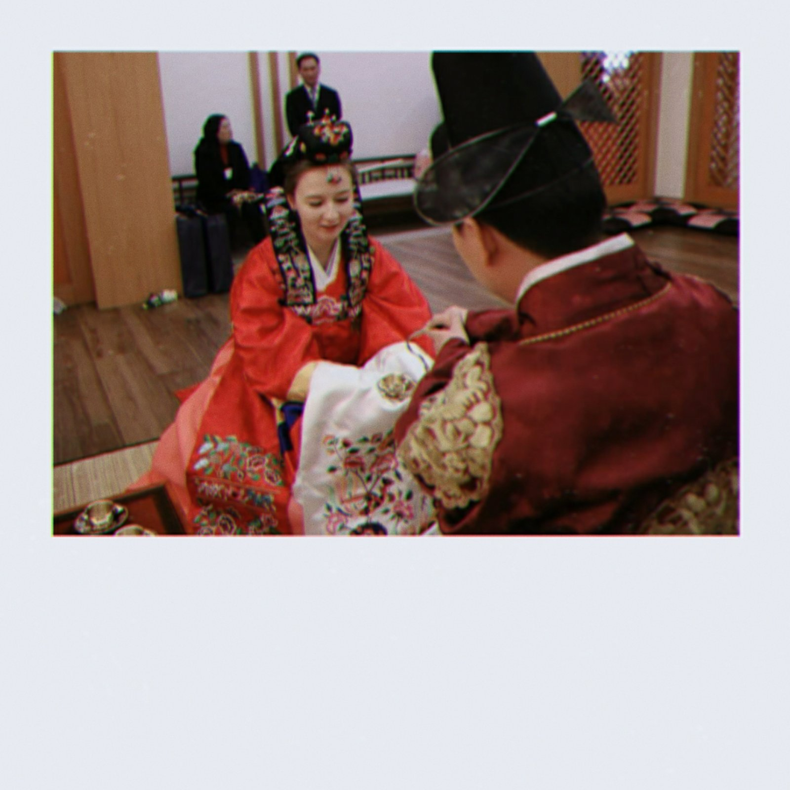
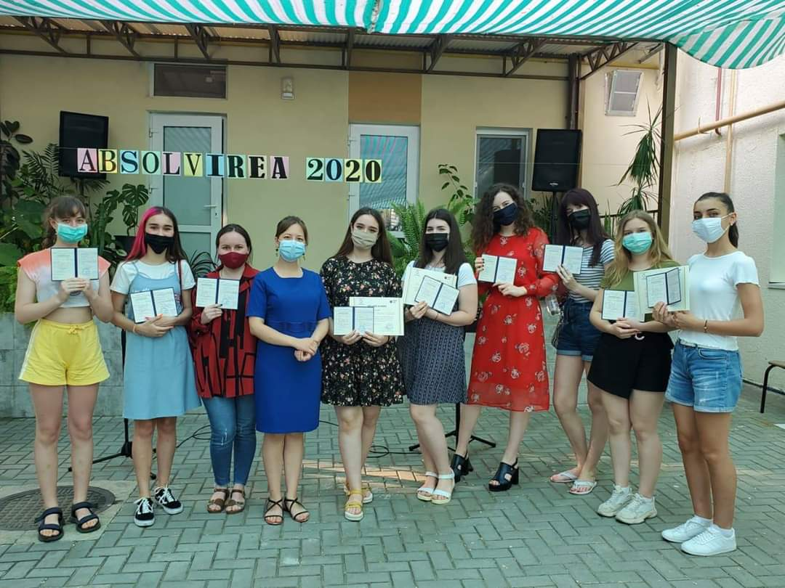
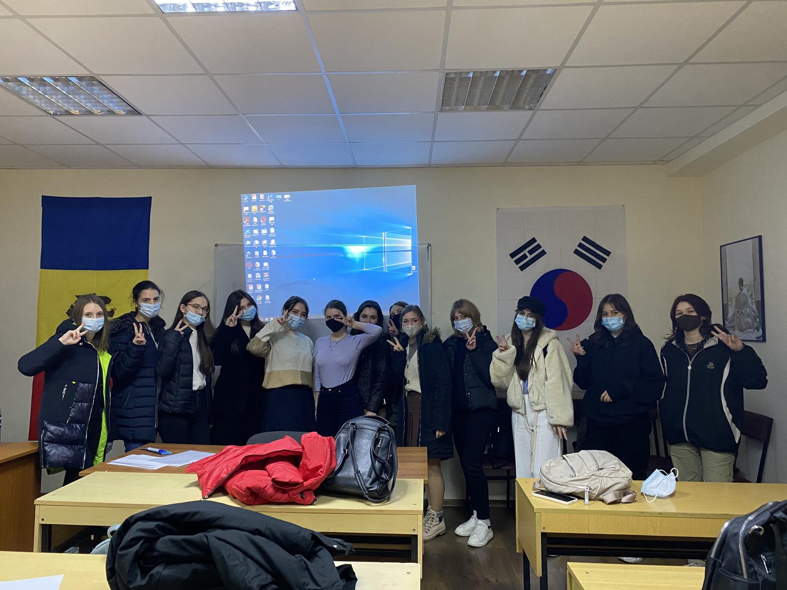
______________________________________________________________________________________________________________________________
Tot în perioada aceasta am reușit să mă îndrăgostesc de mâncarea coreeană și să o gătesc pentru cei dragi
______________________________________________________________________________________________________________________________
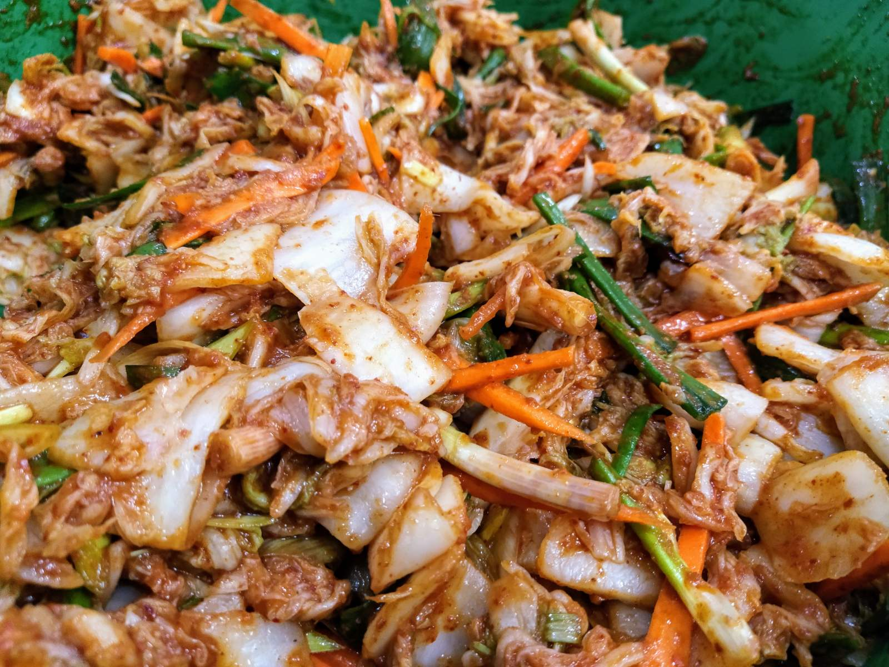
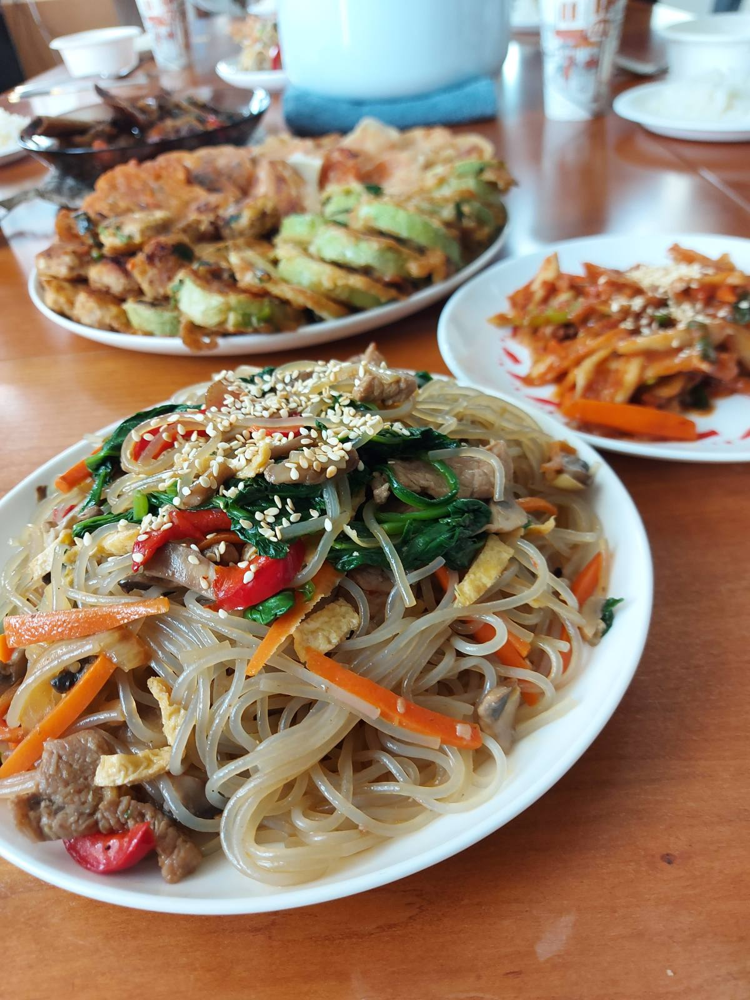
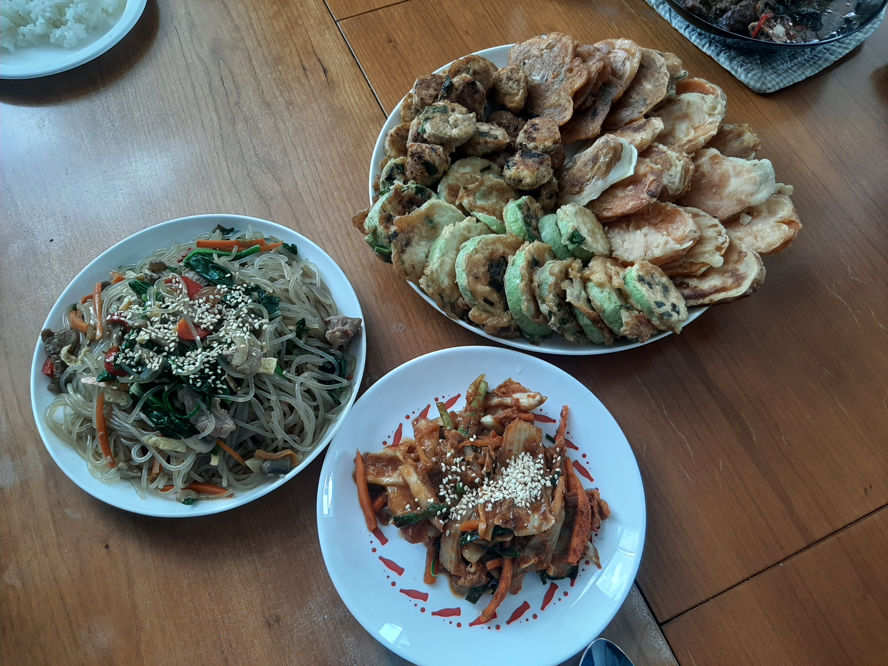
Pagina Principală
Alt Hobby